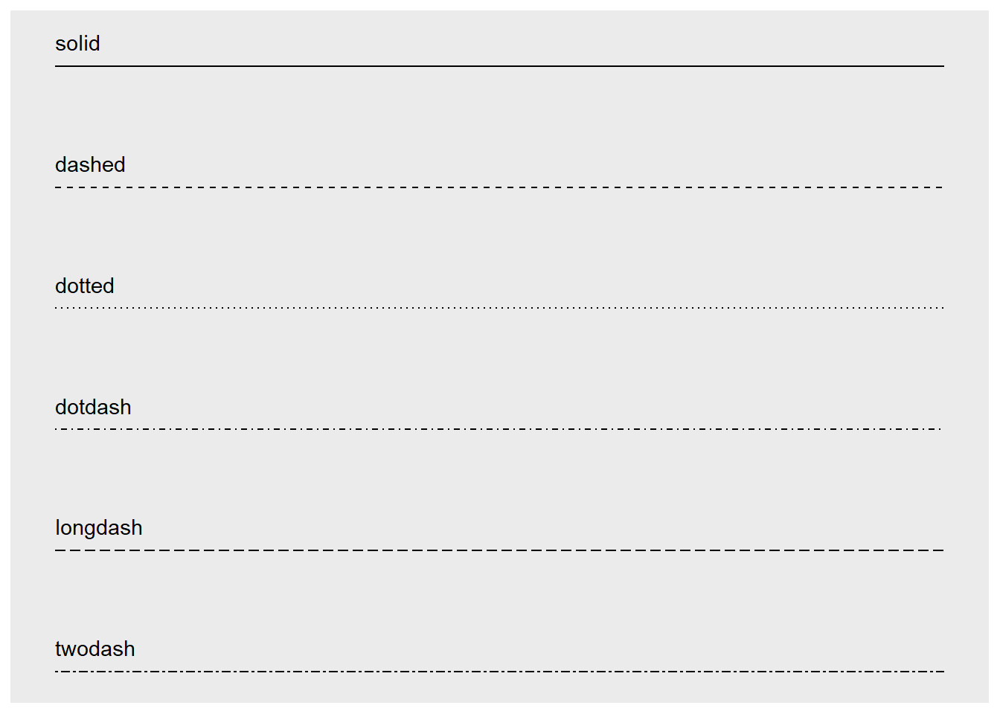
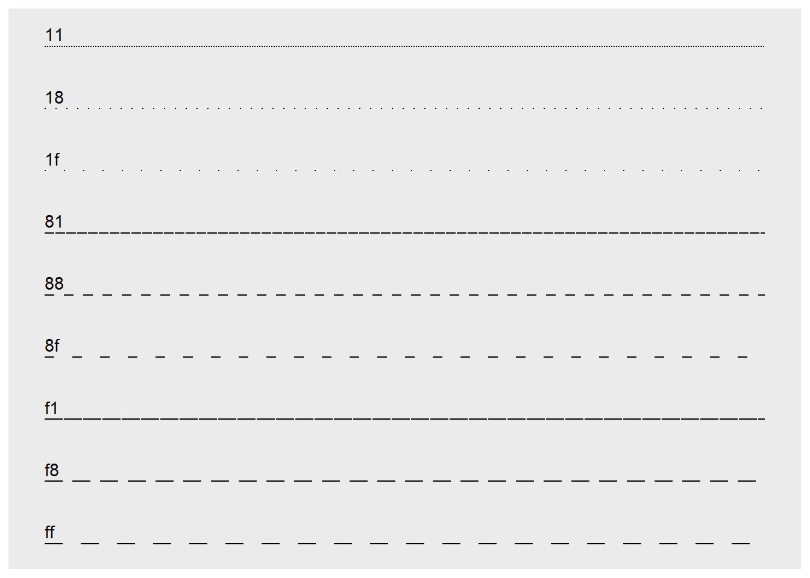
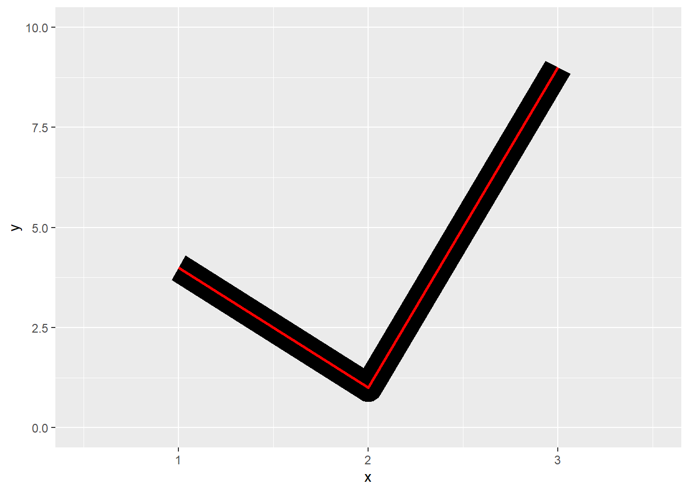
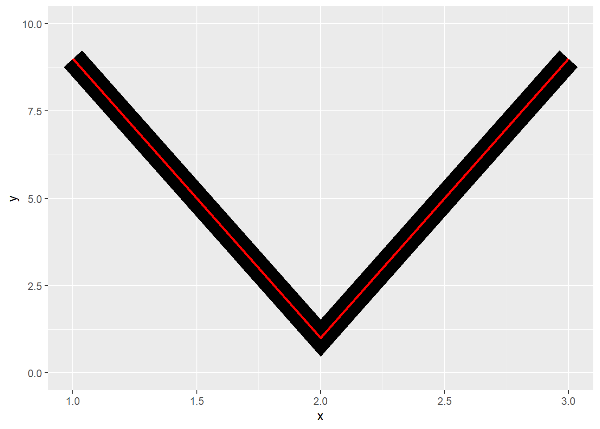
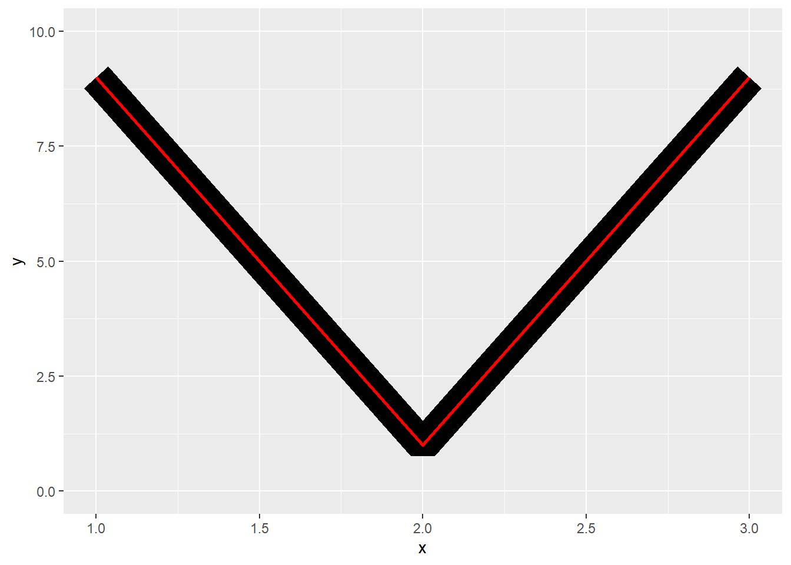
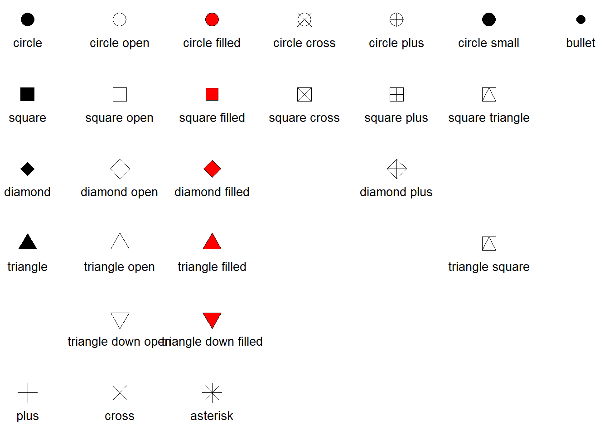
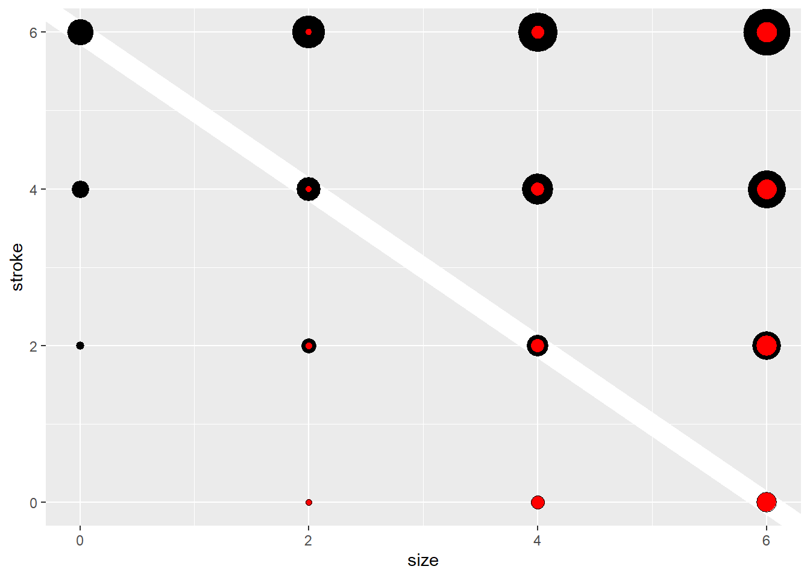
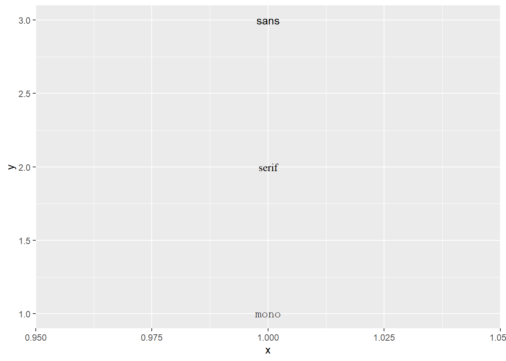
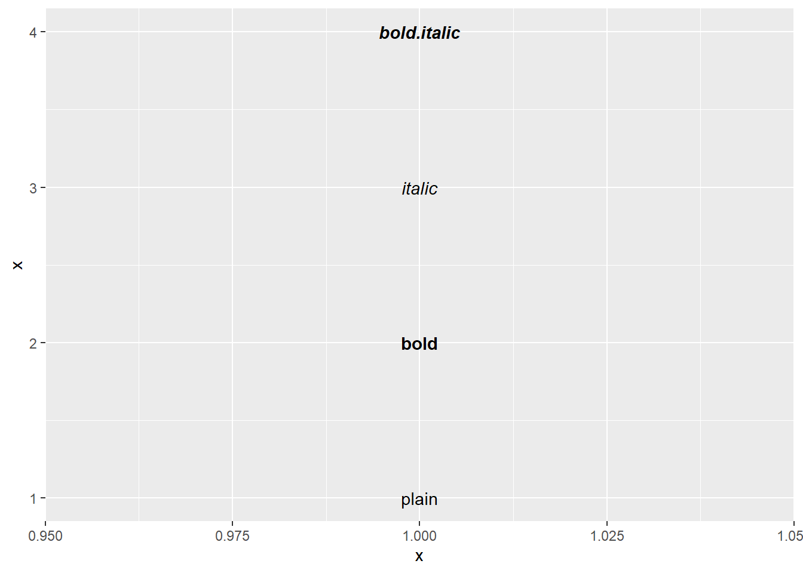
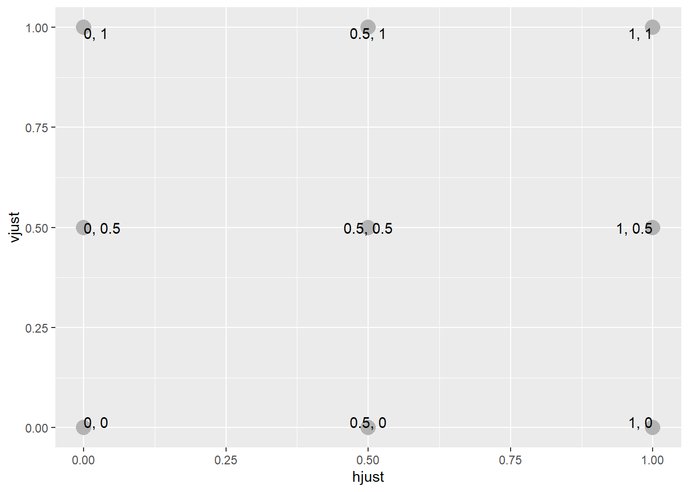

library(ggplot2)Aesthetic specifications
此小节总结了网格绘图函数采用的各种格式。大多数信息都分散在 R 文档中。本附录将所有内容集中到一处。
Colour and fill
几乎每个 geom 都有 colour 和/或 fill。colour 和 fill 可以通过以下方式指定：
A name, e.g.,
"red". R 有 657 种内置命名颜色，可以用colors()列出。An rgb specification，具有
"#RRGGBB"形式的字符串，其中每对RR、GG、BB均由两个十六进制数字组成，给出00到FF范围内的值。 您可以选择使用"#RRGGBBAA"形式使颜色透明。An NA，以获得完全透明的颜色。
munsell package，Charlotte Wickham 开发，让您可以使用 Albert H. Munsell 设计的系统轻松选择特定颜色。如果您花一点时间学习该系统，它会提供一种指定美观颜色的便捷方法。
munsell::mnsl("5PB 5/10") #> [1] "#447DBF"
Lines
除了 colour 之外，line 的外观还受到 linewidth、linetype、linejoin、lineend 的影响。
Line type
线条类型可以通过以下方式指定：
An integer or name: 0 = blank, 1 = solid, 2 = dashed, 3 = dotted, 4 = dotdash, 5 = longdash, 6 = twodash，如下所示：
lty <- c("solid", "dashed", "dotted", "dotdash", "longdash", "twodash") linetypes <- data.frame( y = seq_along(lty), lty = lty ) ggplot(linetypes, aes(0, y)) + geom_segment(aes(xend = 5, yend = y, linetype = lty)) + scale_linetype_identity() + geom_text(aes(label = lty), hjust = 0, nudge_y = 0.2) + scale_x_continuous(NULL, breaks = NULL) + scale_y_reverse(NULL, breaks = NULL)
on/off 线条伸展的长度。这是通过包含 2、4、6、8 个十六进制数字的字符串来完成的，这些数字给出了连续长度的长度。例如，字符串
"33"指定三个单位 on，然后三个单位 off，"3313"指定三个单位 on，然后三个单位 off，然后一个单位 on，然后三个单位 off。lty <- c("11", "18", "1f", "81", "88", "8f", "f1", "f8", "ff") linetypes <- data.frame( y = seq_along(lty), lty = lty ) ggplot(linetypes, aes(0, y)) + geom_segment(aes(xend = 5, yend = y, linetype = lty)) + scale_linetype_identity() + geom_text(aes(label = lty), hjust = 0, nudge_y = 0.2) + scale_x_continuous(NULL, breaks = NULL) + scale_y_reverse(NULL, breaks = NULL)
上述五种标准点划线类型分别对应于 44、13、1343、73、2262。
Linewidth
由于历史误差，线宽的单位约为 0.75 mm。将其精确设置为 1 mm 会改变大量现有绘图，因此我们陷入了这个错误。
Line end/join paramters
line end 的外观由
lineend参数控制，可以是 “round”, “butt” (the default), or “square” 之一。df <- data.frame(x = 1:3, y = c(4, 1, 9)) base <- ggplot(df, aes(x, y)) + xlim(0.5, 3.5) + ylim(0, 10) base + geom_path(linewidth = 10) + geom_path(linewidth = 1, colour = "red")
base + geom_path(linewidth = 10, lineend = "round") + geom_path(linewidth = 1, colour = "red")base + geom_path(linewidth = 10, lineend = "square") + geom_path(linewidth = 1, colour = "red")line joins 的外观由
linejoin控制，可以是 “round” (the default), “mitre”, or “bevel” 之一。df <- data.frame(x = 1:3, y = c(9, 1, 9)) base <- ggplot(df, aes(x, y)) + ylim(0, 10) base + geom_path(linewidth = 10) + geom_path(linewidth = 1, colour = "red")base + geom_path(linewidth = 10, linejoin = "mitre") + geom_path(linewidth = 1, colour = "red")
base + geom_path(linewidth = 10, linejoin = "bevel") + geom_path(linewidth = 1, colour = "red")
只要角度太小（这会产生很长的斜角），斜角连接就会自动转换为斜角连接。这是由 linemitre 参数控制的，该参数指定线宽与斜角长度之间的最大比率。
Polygons
多边形的边界由 colour, linetype, and linewidth 美学控制，如上所述。内部由 fill 控制。
Point
Shape
Shapes 有五种类型的值：
An integer in [0,25]:
shapes <- data.frame( shape = c(0:19, 22, 21, 24, 23, 20), x = 0:24 %/% 5, y = -(0:24 %% 5) ) ggplot(shapes, aes(x, y)) + geom_point(aes(shape = shape), size = 5, fill = "red") + geom_text(aes(label = shape), hjust = 0, nudge_x = 0.15) + scale_shape_identity() + expand_limits(x = 4.1) + theme_void()
The name of the shape:
shape_names <- c( "circle", paste("circle", c("open", "filled", "cross", "plus", "small")), "bullet", "square", paste("square", c("open", "filled", "cross", "plus", "triangle")), "diamond", paste("diamond", c("open", "filled", "plus")), "triangle", paste("triangle", c("open", "filled", "square")), paste("triangle down", c("open", "filled")), "plus", "cross", "asterisk" ) shapes <- data.frame( shape_names = shape_names, x = c(1:7, 1:6, 1:3, 5, 1:3, 6, 2:3, 1:3), y = -rep(1:6, c(7, 6, 4, 4, 2, 3)) ) ggplot(shapes, aes(x, y)) + geom_point(aes(shape = shape_names), fill = "red", size = 5) + geom_text(aes(label = shape_names), nudge_y = -0.3, size = 3.5) + scale_shape_identity() + theme_void()
A single character，使用该字符作为绘图符号
A
.绘制可见的最小矩形，通常为 1 像素An
NA，to draw nothing
Colour and fill
请注意，形状 21-24 有描边 colour 和 fill。填充部分的大小由 size 控制，描边的大小由 stroke 控制。每个点的测量单位为 mm，点的总尺寸为两者之和。请注意，下图中沿对角线的尺寸是相同的。
sizes <- expand.grid(size = (0:3) * 2, stroke = (0:3) * 2)
ggplot(sizes, aes(size, stroke, size = size, stroke = stroke)) +
geom_abline(slope = -1, intercept = 6, colour = "white", linewidth = 6) +
geom_point(shape = 21, fill = "red") +
scale_size_identity()
Text
Font family
只有三种字体保证在任何地方都可以使用：“sans” (the default), “serif”, or “mono”：
df <- data.frame(x = 1, y = 3:1, family = c("sans", "serif", "mono"))
ggplot(df, aes(x, y)) +
geom_text(aes(label = family, family = family))
在绘图上包含系统字体比较棘手，因为每个图形设备 (GD) 的文本绘制方式都不同。有五种常用的 GDs（png(), pdf(), on screen devices for Windows, Mac and Linux），因此要使字体随处可用，您需要以五种不同的方式配置五种设备。两个包稍微简化了这个困境：
showtext通过将所有文本渲染为多边形来制作与 GD-independent plots。extrafont将字体转换为所有设备都可以使用的标准格式。
两种方法都有优点和缺点，因此您需要尝试两种方法，看看哪种最适合您的需求。
Font face
df <- data.frame(x = 1:4, fontface = c("plain", "bold", "italic", "bold.italic"))
ggplot(df, aes(1, x)) +
geom_text(aes(label = fontface, fontface = fontface))
Font size
文本 size 以 mm 为单位测量。这是不寻常的，但使 text 的大小与 lines 和 points 的大小一致。通常，您使用 points（简称 pt）指定字体大小，其中 1 pt = 0.35mm。 ggplot2 在变量 .pt 中提供了此转换因子，因此如果要绘制 12pt 文本，请设置 size = 12 / .pt。
Justification
水平和垂直对齐具有相同的参数化，可以是字符串（“top”, “middle”, “bottom”, “left”, “center”, “right”）或 0 到 1 之间的数字：
top = 1, middle = 0.5, bottom = 0
left = 0, center = 0.5, right = 1
just <- expand.grid(hjust = c(0, 0.5, 1), vjust = c(0, 0.5, 1))
just$label <- paste0(just$hjust, ", ", just$vjust)
ggplot(just, aes(hjust, vjust)) +
geom_point(colour = "grey70", size = 5) +
geom_text(aes(label = label, hjust = hjust, vjust = vjust))
请注意，您可以使用 (0, 1) 范围之外的数字，但不建议这样做。